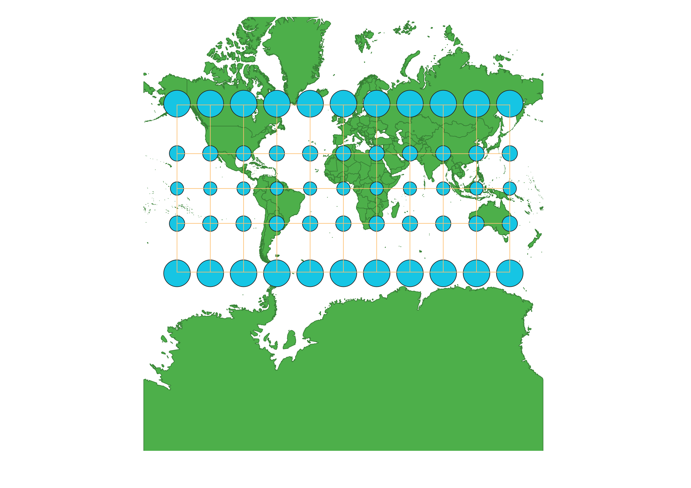
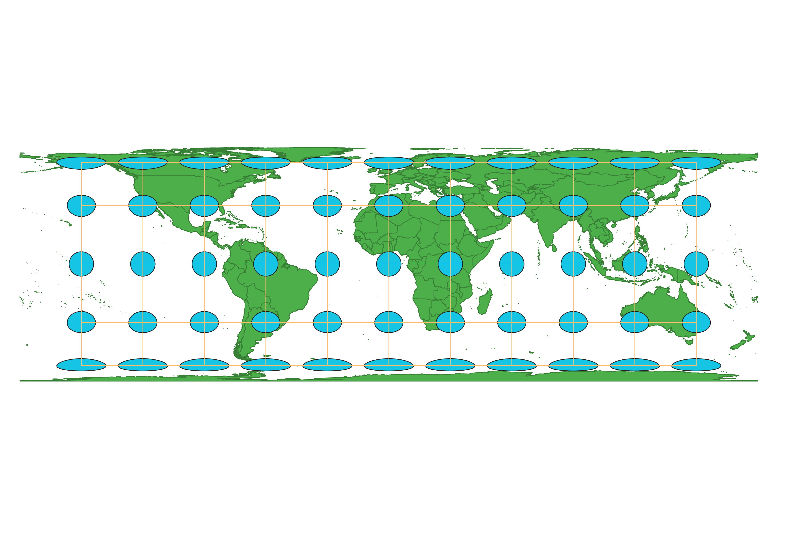
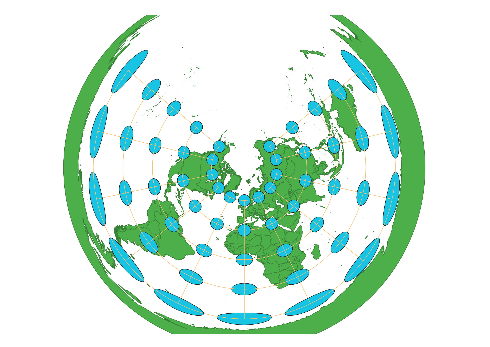
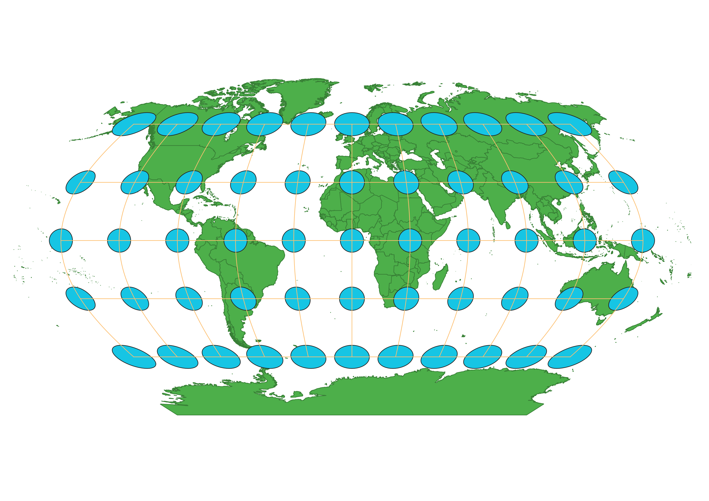
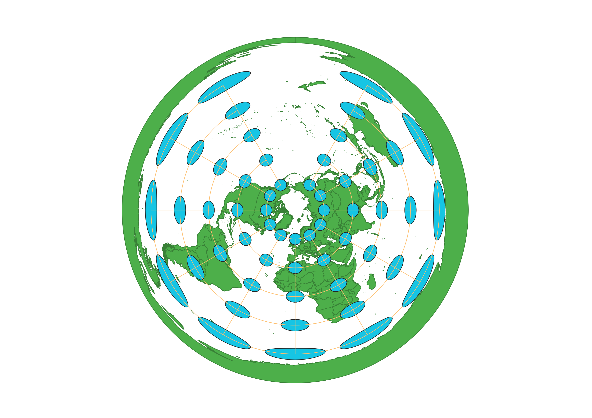
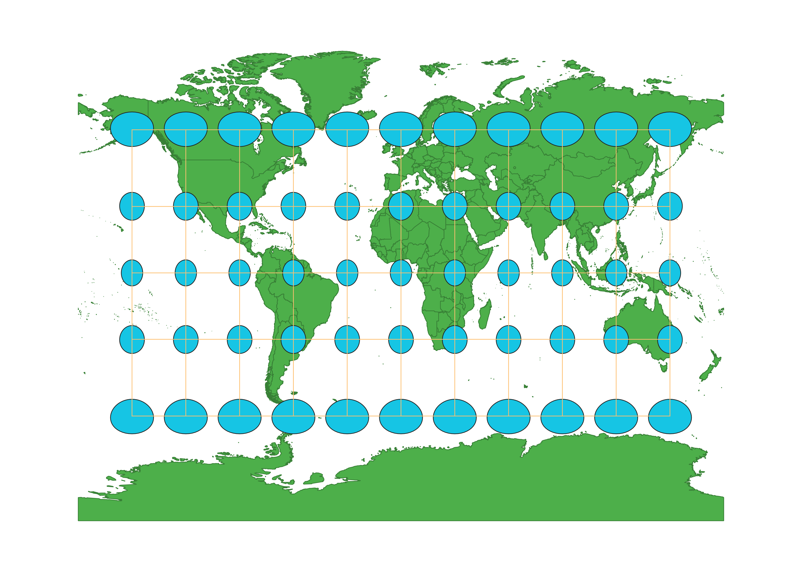
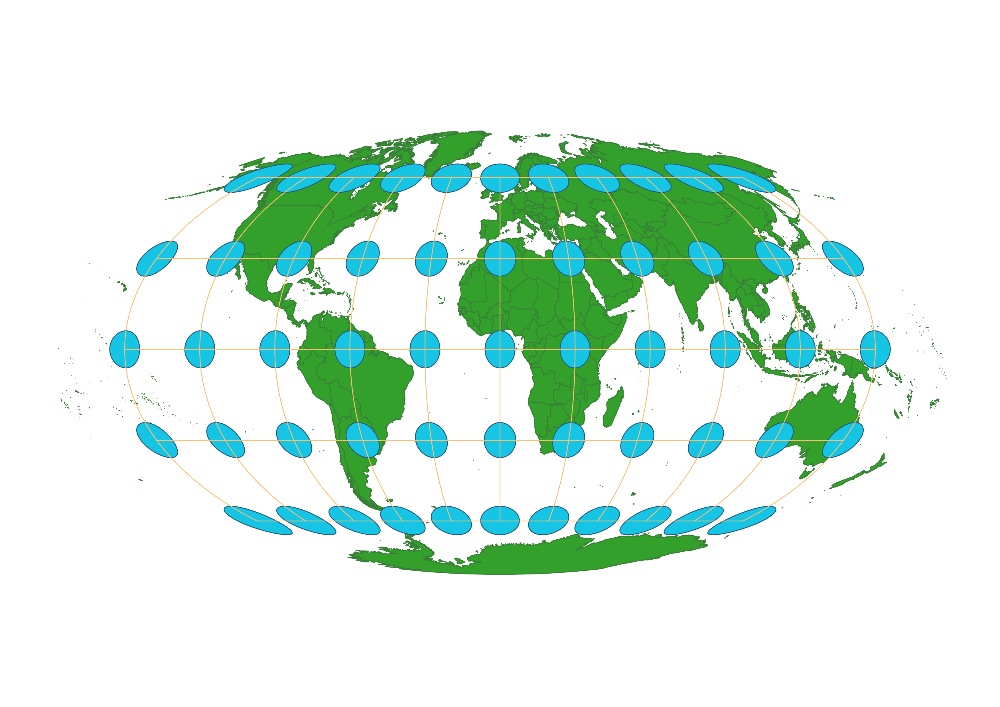

World Projection Maps
How the maps were created in QGIS
First, in QGIS, I opened the shape file from the natural earth data in the world projections folder downloaded from Sakai. Then, I clicked on "Project" and then "Properities" which opened the window where you can apply different map projections. For each map projection, after applying it to the existing data from natural earth, I clicked the indicatrix mapper plugin and then "Run" to apply the indicatrices. Then, I right clicked and selected "Properities" on each layer and changed the colors, so they were the same for each map projection. Lastly, for each projection, I clicked "Project", then "New Print Layout", named the file, clicked "Add a new map to the layout", and exported the file as a png.
WGS84 Projection
This projection is a compromise projection which does not perfectly maintain shape or size but balances out the distortions of both. The indicatrices become both bigger and more elliptical towards the poles from the equator.

Aitoff Projection
This projection is also a compromise projection which does not perfectly conserve size or shape but balances out the distortions of both. The indicatrices get bigger and more elliptical in all directions from the intersection of the equator and the prime meridian.

Psuedo Mercator Projection
This projection is a conformal projection which generally perserves shape and angles but distorts size. The indicatrices all remain circles, but they get larger towards the poles from the equator.

Cylindrical Equal Area Projection
This projection is an equal area or equivalent projection which maintain area or size but distorts shape. The indicatrices are the same area, but the shape becomes much more elliptical towards the poles from the equator.

Equidistant Conic Projection
This projection is an equidistant projection which perserves distance but distorts size and shape. The indicatrices become larger and more elliptical towards the South Pole from the North Pole.

Winkel I Projection
This projection is a compromise projection which balances the distortions of size and shape instead of trying to perserve one or the other. The indicatrices remain largely the same at the equator but become bigger and more elliptical in the polar regions.

North Pole Azimuthal Projection
This projection is an azimuthal projection which maintains direction and distance from a central point, in this case the North Pole, but distorts size and shape. The indicatrices distort in size and shape getting bigger and wider from the North Pole to the South Pole.

Gall Stereographic Projection
This projection is a compromise projection which does not fully maintain size or shape but aims to balance out the distortions. The indicatrices remain the same along the equator but get larger and wider towards the poles.

Mollweide Projection
This projection is an equal area projection which maintains area while distorting shape. The indicatrices stay the same area or size, but their shape is distorted particularly in the polar regions.

Data used for this project:
Download Natrual Earth 1:10m Cultural Vector